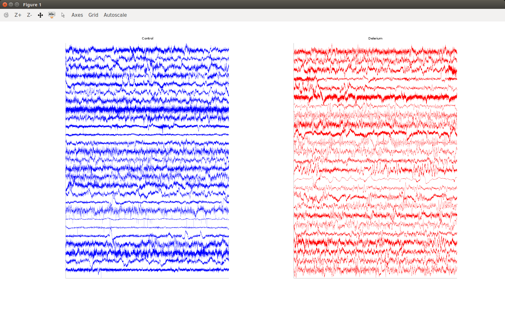
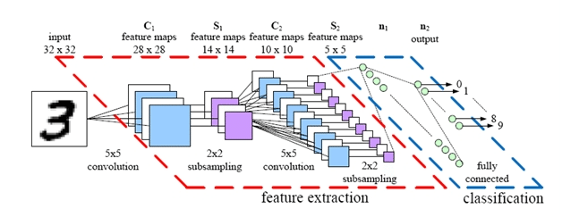
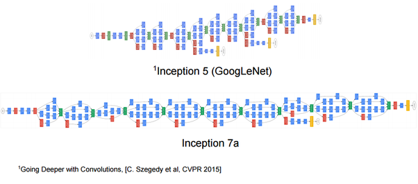

Data Science Meetup: Delirium Detection With CNNs
Introduction
Noel Burton-Krahn
Delirium Detection in EEGs
Got baseStudyEDF: control and delerium EEGs Total Control: 27 Total Delirium: 25

Neural Networks
Images from CS231n Convolutional Neural Networks for Visual Recognition


Convolutional Networks


Deep Neural Networks


Demo Digit Classifier
2D Visualization of a CNN by A Harley, Ryerson
https://vimeo.com …